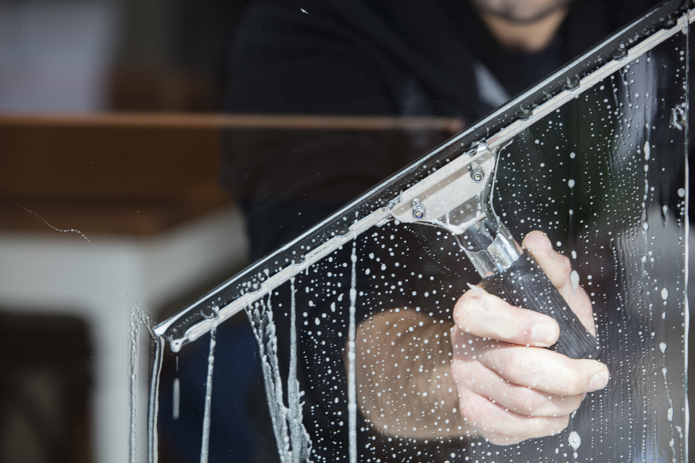

Un regard clair sur la perfection. Des vitres parfaitement propres valorisent votre image et laissent entrer la lumière naturelle dans vos espaces.
Nous utilisons des raclettes professionnelles, de l'eau déminéralisée et des produits adaptés pour un résultat impeccable sur tous types de vitrages, quelle que soit la surface accessible.

Raclettes, perches télescopiques et produits adaptés à chaque type de vitrage.
Les vitres restent propres plus longtemps grâce à notre technique sans traces.
Intervention rapide et efficace, sans perturber votre activité quotidienne.
Des vitrines et bureaux lumineux renforcent l'attractivité de votre établissement.
Contactez-nous pour un devis adapté à votre surface et à votre fréquence souhaitée.